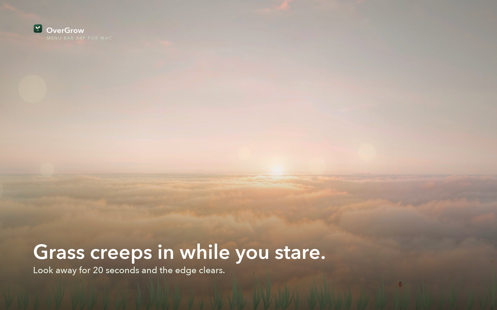
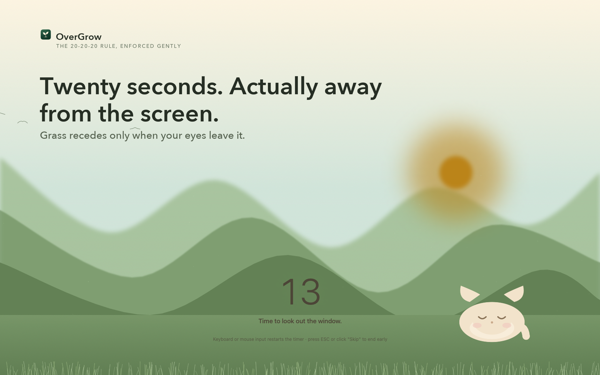
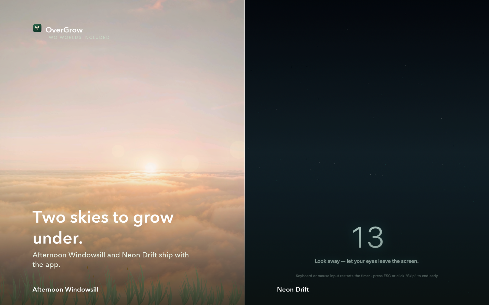
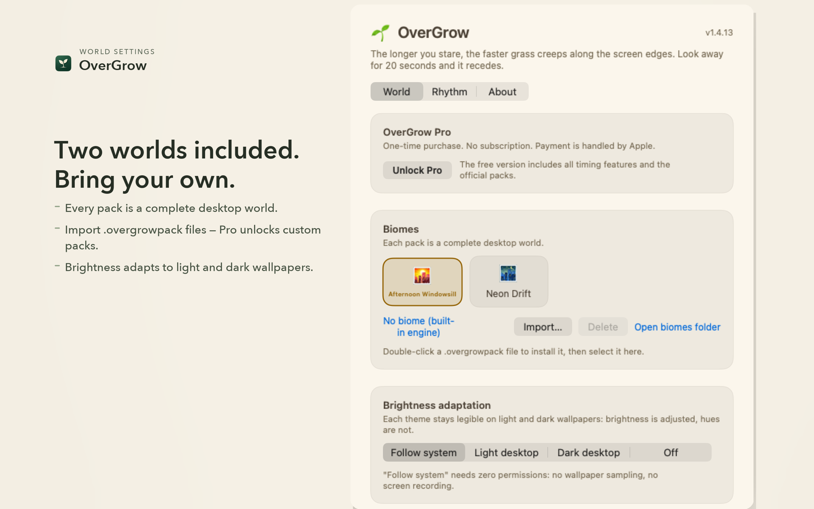
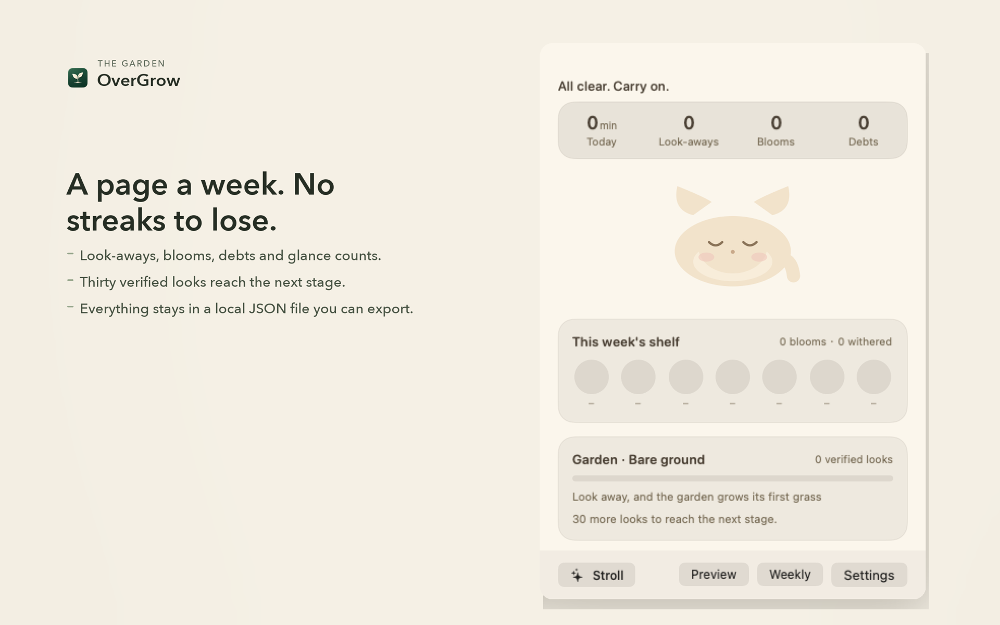

OverGrow lives in your Mac's menu bar. Watch the screen for twenty minutes and grass creeps in along the edges — never over your work. Look away for twenty seconds and it fades back. That's the whole trick, and it works.

The 20-20-20 rule says: every 20 minutes, look at something 20 feet away for 20 seconds. Everyone knows it; nobody does it. OverGrow turns it into something you can see.
A quiet timer in the menu bar counts your screen time. No pop-ups, no nagging, nothing moves.
Grass creeps in from the screen edges. The longer you stare, the further it spreads — sunlight dims on the windowsill, fireflies take over the frame at night.
Twenty real seconds and the wind clears the edges. Skip it with ESC and you take on a debt: it grows back faster next time. Your week lands in the Garden — one page, no streaks to lose.

Each world is a complete desktop scene — palette, weather, wildlife and rest screen all match.
Two come with the app, free. You can also grow your own with a .overgrowpack: a folder of
JSON and images, no code needed.



Worlds are built in the open. Browse, install and submit themes on GitHub — no account needed to download, a GitHub account to post.
Theme gallery & forum: github.com/overgrow-app/overgrow-themes
Submit a world you made and, if it's picked for the gallery, you get permanent credit plus a free copy of OverGrow.
Install anything from the gallery by double-clicking its .overgrowpack file.
The timer — the part that actually helps your eyes — is free forever, with no limits. Pro is one purchase, not a subscription.
| Free | Pro · one-time | |
|---|---|---|
| Break timer, stare tracking, weekly Garden page | Included | Included |
| Both official worlds (Windowsill & Neon Drift) | Included | Included |
Import your own worlds (.overgrowpack) | — | Unlocked |
| Low-profile mode (spreading stays in the menu bar) | — | Unlocked |
| Price | Free | ¥68 ≈ $9.99 · one-time, not a subscription |